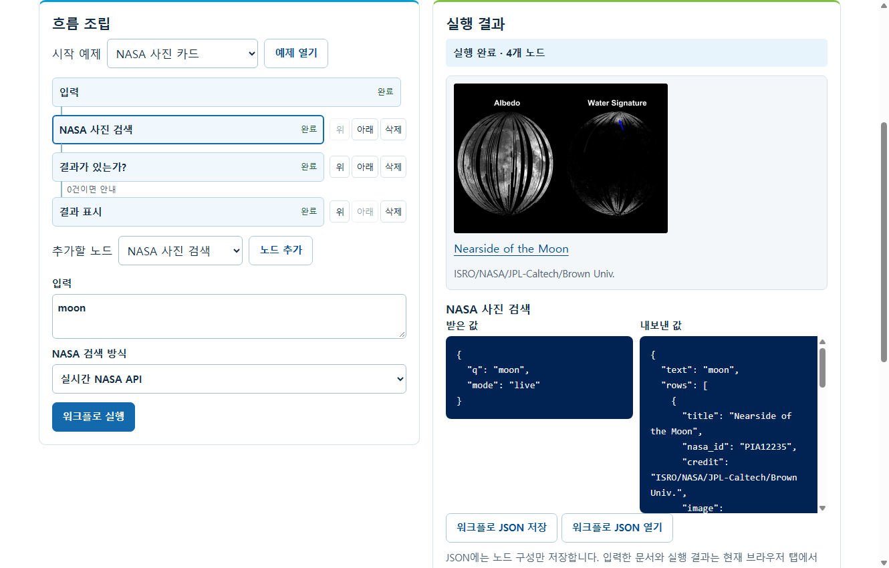

MCP 도구 만들기
예제 파일에서 규칙 하나를 바꿔 실행합니다. 도구 목록과 호출 결과를 비교해 내가 수정한 문장이 돌아오는지 확인합니다.
MCP 설치와 호출 순서브라우저 실습
공개 사진 검색으로 함께 시작합니다. 실습실에서 상자(노드)를 연결하고, 실행 기록에서 자료가 어떻게 이동하는지 확인합니다. 그다음 문서 비교나 관심 자료 수집처럼 각자 해보고 싶은 일을 골라 연결합니다.
혼자 확인할 기준 · 결과가 있는 검색, 0건인 검색, 연결 실패 실습이 각각 다른 상태로 나오는지 봅니다.

3회차와 이어지는 부분 · 지난 시간에는 AI가 근거를 찾아 답하게 했습니다. 이번에는 언제 자료를 가져오고, 어떤 조건에서 AI를 쓰고, 어디에 결과를 저장할지를 내가 정합니다. 검색·분기·저장은 프로그램이 처리하고, 설명 쓰기처럼 필요한 단계에 AI를 붙입니다.
11월 26일 목요일
13:00–18:00
휴식 14:45–14:55, 16:00–16:10
검색어를 바꾸고 어떤 결과가 나올지 예상합니다.
상자를 연결하고 응답 JSON과 워크플로 파일을 열어봅니다.
도구의 목록과 입력 규칙, CLI 인증과 요청 방식을 확인합니다.
작은 모델을 실행하고 자기 주제로 그래프를 조립합니다.
실패 상황을 확인하고 다음에 적용할 자료와 검증 기준을 적습니다.
로컬 실습
브라우저 실습에서 확인한 작업을 PC에서 직접 연결합니다. 공개 사진 검색에 작성 규칙을 찾아주는 MCP 도구를 붙이고, 모델에게 받은 초안을 파일로 저장합니다.
예제 파일에서 규칙 하나를 바꿔 실행합니다. 도구 목록과 호출 결과를 비교해 내가 수정한 문장이 돌아오는지 확인합니다.
MCP 설치와 호출 순서Team 계정으로 로그인하고 간단한 응답을 받아봅니다. 같은 MCP 도구를 Claude Code에 연결하는 방법도 다룹니다.
Claude Code 따라하기NASA 검색, MCP 작성 규칙, CPU 모델 응답이 어떤 순서로 이어지고 어떤 결과 파일을 남기는지 확인합니다.
로컬 워크플로 따라하기모델 다운로드
Hugging Face에서 모델을 찾고, GGUF 파일 하나를 받아 llama.cpp에서 실행합니다. 작은 첫 실습 모델부터 한국어 비교용 모델까지 파일 크기와 사용 목적을 함께 확인할 수 있습니다.
먼저 브라우저에서 검색 예제를 실행합니다. PC 설치가 끝났다면 MCP와 CPU 모델까지 이어서 실습하고, 설치가 어려우면 실행 화면을 보면서 브라우저 실습과 자기 워크플로를 먼저 완성합니다.